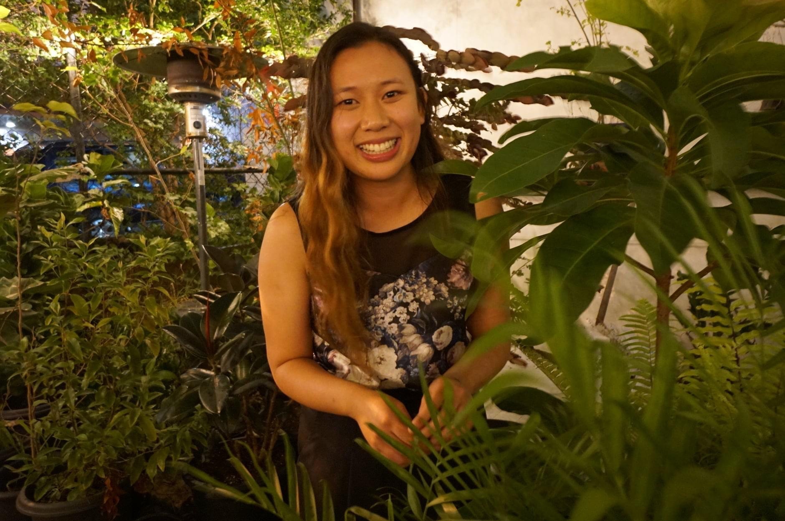
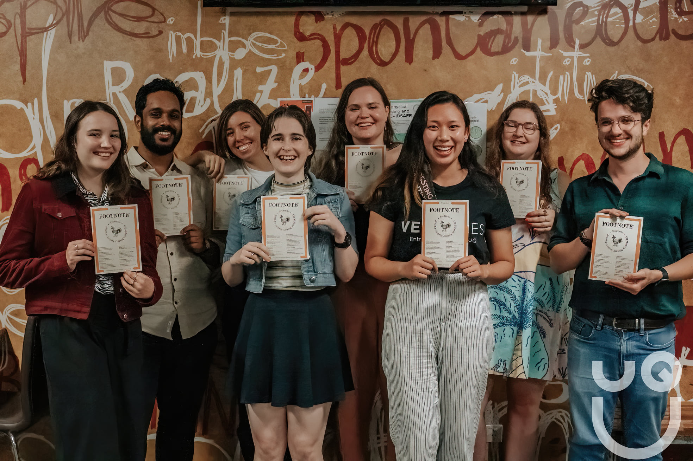

Portfolio
Apr 2022
Through She Codes Australia 6-month PLUS program, I learnt how to code and created projects to consolidate my learning. My first project was to use a mix of HTML and CSS with a smidgen of JavaScript to create my portfolio website - and you're here!
Footnote
Aug 2020 - present
I am the founding President of Footnote, a student journal that celebrates the research and writing of history students. Run by a team of volunteers based at the UQ Modern History Society, Footnote publishes editions biannually and features essays from authors all around the world on a wide range of topics.